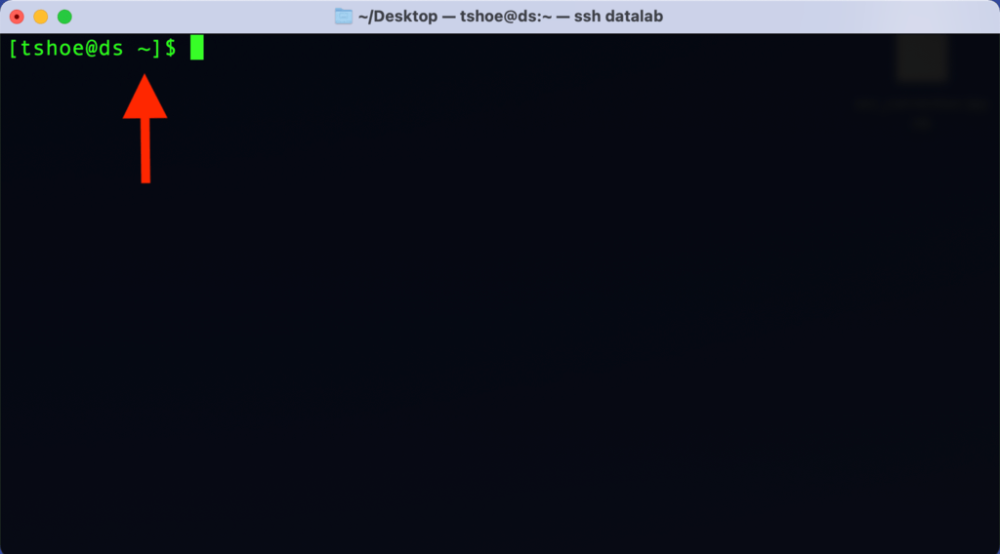

2. Command Line Basics#
Learning Goals
After this lesson, you should be able to:
Open a terminal
Explain what a prompt is
Explain the shell command syntax
Name some common shell commands
Describe how to get help with shell commands
2.1. Opening a Terminal#
To use the command line, we need to run a terminal program.
Git Bash is the terminal we recommend on Windows. It is not built into Windows, so you have to install it yourself. The Setup chapter provides instructions.
To launch Git Bash, open the start menu and search for “Git Bash” or
select Programs -> Git Bash.
When the Git Bash opens, it will look something like this:
Fig. 2.3 Git Bash on Windows.#
The built-in Terminal application is what we recommend on macOS.
To launch Terminal, select Applications -> Utilities -> Terminal.
When the Terminal app opens, it will look something like this:

Fig. 2.4 The Terminal app on macOS.#
Many different terminals are available for Linux. Any are likely okay for this workshop, but the examples were only tested in WezTerm.
2.2. The Anatomy of the Command Line#
While the command line can look intimidating to those raised on a GUI, it’s important to know that it is nevertheless an interface in the same way that your computer’s default windowing system is an interface. That is, even though a CLI is something of a bare-bones representation of your computer, it too relies on a series of assumptions and metaphors that serve to frame how you interact with your computer. Using the CLI may feel strange at first, but part of that feeling comes from not being acclimated to the way it represents a computer.
For example, instead of pointing and clicking on things in your computer, as you’d do with a GUI, you type in your commands with a CLI. In this way, a CLI is more like a typewriter than it is a desktop (an even better analogue would be a teleprinter).
To see this, return to the terminal window.
Everything that will happen in this window happens on a line-by-line basis.
Here, we see the command line prompt, where you’ll type your commands. The
prompt itself offers valuable information about your computer. The beginning of
the line, tshoe@ds, tells us the current user (tshoe) and current computer
(ds). This may seem redundant, but with the command line it is possible to
interact with remote computers via a network, so it can be helpful to have this
information displayed as a reference point.
The bit of information after the colon (in this example, the ~ character)
tells us where in the computer’s filesystem we are. We’ll discuss this later.
For now, just keep in mind that you can look here to find your current
location. In this case, ~ means you are in your home directory.

After the location, we see the $ character. It is an indicator that lets you
know the command line application is waiting for you to enter something.
Caution
You do not need to type $, it will appear automatically, but examples online
sometimes include it to emulate what you’ll see onscreen.
We do not include the $ at the beginning of any commands in this reader.
Depending on your system and/or command line interface, you may or may not also
see a solid or flashing box that appears after the prompt character. This is a
cursor position indicator and it tells you where the current cursor is in
the terminal. This is useful if you need to go back and correct and error.
Since you can’t click around with a mouse in a CLI, you’ll have to use your
computer’s Left and Right arrows to move the cursor to your desired
location and make any changes from there.
2.3. Interacting with the Command Line#
You can run, or execute, a command in the terminal by typing the command’s
name—followed by any additional information the command requires—and then
pressing Enter or Return on your keyboard.
For example, the echo command prints text to the screen. It literally echoes
your text:
echo "Hello world!"
Hello world!
When you enter a command, your computer’s shell program interprets and runs the command, prints any output from the command to the terminal, and finally prints a new command line prompt.
As another example, if you want to list the files and folders in the current
directory, you can run the ls command:
ls
backups data.csv jupyter_notebook.ipynb project_folder
You can also use ls on a subfolder to show its contents:
ls project_folder
file_1.txt file_2.txt
Want some more information about your files and folders? You can modify the
base functionality of the ls command – and in fact you can do this for many
such commands – with flags. We do this by adding a dash (-) and then a
letter, or a combination of letters, directly after the dash.
ls -lha
…will print out information about the permissions, size, and date of the current directory’s contents, as well as the user(s) who created them:
ls -lha
.
..
.config_file
drwxrwxr-x 2 tshoe staff 4.0K Jun 21 23:30 backups
-rw-rw-r-- 1 tshoe staff 28K Oct 4 20:42 data.csv
-rw-rw-r-- 1 tshoe staff 6.2K Aug 27 22:44 jupyter_notebook.ipynb
drwxrwxr-x 8 root root 4.0K Oct 4 21:44 project_folder
It’s worth walking through this output, because it demonstrates how we can
bring important information into view with just a few keystrokes. For
beginners, the most relevant portions of ls -lha are likely to be toward the
end of the output, where the file sizes are listed along with the date each
file was last modified. To the left of this information are listings for the
file owner/file group (respectively, tshoe/staff and root/root). These
listings help us make some sense of the most confusing part of the above
output: those strings of r’s, w’s, and x’s. These represent the various
permissions for each file. Permissions are specific file attributes that
control which users can read (r), change (w), or execute (x) a file.
Depending on what level of permissions you, or the user group to which you
belong, have been assigned, you may or may not be able to work with certain
files (if you’re on your personal computer, you likely have full permissions).
Besides outputting file information, ls -lha also shows us three things in
our folder that were otherwise hidden with just ls: ., .., and
.config_file. The first two are special notation for navigating your
computer, which we’ll discuss in a later section. The last, .config_file, is
a dotfile. Dotfiles (named for the . that prefaces them) are hidden by
default on your computer. They often contain various configuration settings
that people use to customize their computers. Some will also log the history of
commands you’ve sent via a CLI (for example, .bash_history or
.python_history). We can’t discuss these files in depth, but for the moment
it’s worth recognizing that they exist and that you’ll occasionally encounter
them when working on the command lie.
Depending on your particular system and/or CLI, all of the above might look slightly different on your computer. However, the basic presentation and functionality as described above will be the same. Typing is the predominant way of using a CLI, and the results of sending in commands with a CLI are text-only representations of your computer and your files.
2.4. Command Syntax#
As you can see, the syntax of commands is straightforward. Commands use a
space to delimit their different components, and flags are called with - to
modify those commands. When put together, we can generalize these components
look like so:
[command] [optional flags] [file, data, or other pointer on which to run the command]
There is one caveat to this: because commands use spaces to delimit their
components, you can run into problems when running commands on files with
spaces in their names. Your command line interface program will interpret that
file’s spaces as separate components and an error will almost surely result. If
you’re running a command on a file with a space in its name, you’ll need to
escape that space with \.
This will throw an error:
[command] file name.txt
This will not:
[command] file\ name.txt
While escape characters are perfectly workable, they can be a bit of a pain to type over and over. For this reason, people who use the command line in their daily work often avoid spaces altogether when naming their files. If you’re interested to learn more about what conventions you might use in place of spaces, see this section on file names in the DataLab’s workshop reader about project organization and documentation.
2.5. Common Commands#
During our hands-on workshop session we will practice using several commands, which are listed below (along with a few other supplementary ones).
Command |
Name |
Description |
|---|---|---|
|
List |
Lists all files in the current directory. |
|
List with long flag |
Lists additional information about each file. |
|
List with human-readable flag |
Lists file information in a human-readable format. |
|
List with all flag |
Lists all files, including hidden files. |
|
File |
Determines the type of file. |
|
Concatenate |
Prints the contents of a file to screen. |
|
Print Working Directory |
Prints the current working directory. |
|
Make Directory |
Creates a new directory. |
|
Change Directory |
Navigates to another directory on the file system. |
|
Move |
Moves files. |
|
Copy |
Copies files. |
|
Unzip |
Decompresses file archives. |
|
Remove/Delete |
Deletes files. |
|
Manual |
Opens the manual page for another command. |
There are dozens of base commands, each with their own set of flags, and it’s possible to install software that will expand that number even more. We can’t go over everything in the workshop, but familiarizing yourself with the basic command syntax will help you find your way around new commands.
2.6. Getting Help#
One other thing that will help you learn about new commands is man
(“manual”). This opens the manual page for another command:
man ls
LS(1) User Commands LS(1)
NAME
ls - list directory contents
SYNOPSIS
ls [OPTION]... [FILE]...
DESCRIPTION
List information about the FILEs (the current directory by default). Sort entries alphabetically if none of
-cftuvSUX nor --sort is specified.
Mandatory arguments to long options are mandatory for short options too.
-a, --all
do not ignore entries starting with .
-A, --almost-all
do not list implied . and ..
--author
with -l, print the author of each file
-b, --escape
print C-style escapes for nongraphic characters
--block-size=SIZE
with -l, scale sizes by SIZE when printing them; e.g., '--block-size=M'; see SIZE format below
-B, --ignore-backups
do not list implied entries ending with ~
-c with -lt: sort by, and show, ctime (time of last modification of file status information); with -l:
show ctime and sort by name; otherwise: sort by ctime, newest first
-C list entries by columns
--color[=WHEN]
colorize the output; WHEN can be 'always' (default if omitted), 'auto', or 'never'; more info below
-d, --directory
list directories themselves, not their contents
[...]
As opposed to the usually mute, minimalist disposition of a CLI, here you can
see thorough documentation for a given command and its various flags. A
visually condensed version of this information is also accessible by flagging a
command with --help, as in ls --help. Sometimes it can also be helpful to
know what version of a command you’re using, as commands themselves can be
updated. You can find this information for some commands with --version, or
--v:
man --v
man, version 1.6g
Still unclear about what a command does? Look it up with your favorite search engine, or visit Stack Exchange and search there. CLIs are widely used software, and chances are incredibly good that someone else has had the same question you want to ask.
2.7. When Problems Arise#
Error messages offer another, admittedly less pleasant way to learn about how a command works. When you’re first starting out with any kind of console-based software (whether it be a CLI or writing code), one of the most important skills you can learn is how to read an error message. For the most part, such messages are quite clear; they’re intended to help you debug your problem and thus attempt to supply you with information about what might be going wrong.
As an example, if you’re at your home directory, and it looks like the following:
ls
backups data.csv jupyter_notebook.ipynb project_folder
…and you decide to ls a folder within this directory that doesn’t exist:
ls no_name
You’ll see this error message:
ls no_name
ls: cannot access 'no_name': No such file or directory
This tells you that, while you’ve sent in a valid ls command, it can’t find
what you’re looking for.
Likewise, forgetting a space:
echo"hello"
…will produce:
echo"hello"
-bash: echohello: command not found
Or in other words, you’ve sent in a command that’s either invalid or is unavailable. These messages are both fairly clear, but if you’re ever confused, or if you simply want to find out more about an error, a search engine is once again your friend. Sometimes simply copy/pasting the error message and searching on that alone will lead directly to information about what went wrong.
That all said, sometimes you need to stop a CLI process immediately. Did you,
for example, do something that causes your computer to print a million lines on
screen? Did you decide you don’t want a file copied to a new location, and it’s
still in the midst of transferring? You can interrupt any command with
CTRL+C. This will stop whatever current process is running in your interface.
While you can stop a command, for the most part it isn’t possible to undo a command. Please take care to know exactly what you’re running and what you’re running it on, especially when it comes to modifying or deleting things on your computer.